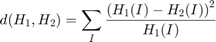

Histogram Comparison
In this demo, we show how to:
- Use the function cv.compareHist to get a numerical parameter that express how well two histograms match with each other
- Use different metrics to compare histograms
Sources:
Contents
Theory
To compare two histograms ( and  ), first we have to choose a metric () to express how well both histograms match.
), first we have to choose a metric () to express how well both histograms match.
OpenCV implements the function cv.compareHist to perform a comparison. It also offers 4 different metrics to compute the matching:
- Correlation:
where
and is the total number of histogram bins.
- Chi-Square:

- Intersection:
- Bhattacharyya:
Code
This program:
- Loads a base image and 2 test images to be compared with it.
- Generate 1 image that is the lower half of the base image
- Convert the images to HSV format
- Calculate the H-S histogram for all the images and normalize them in order to compare them.
- Compare the histogram of the base image with respect to the 2 test histograms, the histogram of the lower half base image and with the same base image histogram.
- Display the numerical matching parameters obtained.
Load source images (base image and the two other images to compare)
im = {
'https://docs.opencv.org/3.3.1/Histogram_Comparison_Source_0.jpg'
'https://docs.opencv.org/3.3.1/Histogram_Comparison_Source_1.jpg'
'https://docs.opencv.org/3.3.1/Histogram_Comparison_Source_2.jpg'
};
src = cell(3,1);
for i=1:3
[~,name,ext] = fileparts(im{i});
fname = fullfile(mexopencv.root(), 'test', [name ext]);
if exist(fname, 'file') ~= 2
disp('Downloading image...')
urlwrite(im{i}, fname);
end
src{i} = cv.imread(fname, 'Color',true);
endalso create an image of half the base image
src{4} = src{1}(end/2:end,:,:);
src = src([1 4 2 3]);show images
names = {'Base', 'Half', 'Test1', 'Test2'};
for i=1:numel(src)
subplot(2,2,i), imshow(src{i}), title(names{i})
endconvert images to HSV color space
hsv = cell(size(src)); for i=1:numel(src) hsv{i} = cv.cvtColor(src{i}, 'RGB2HSV'); end
calculate H-S 2D histograms
%ranges = {linspace(0,180,50+1), linspace(0,256,60+1)}; ranges = {[0 180], [0 256]}; hsizes = [50, 60]; histo = cell(size(hsv)); for i=1:numel(hsv) histo{i} = cv.calcHist(hsv{i}(:,:,1:2), ranges, 'HistSize',hsizes, 'Uniform',true); histo{i} = cv.normalize(histo{i}, 'NormType','MinMax', 'Alpha',0, 'Beta',1); end
compare histogram of the base image against the other histograms using four different metrics
algs = {'Correlation', 'ChiSquare', 'Intersection', 'Bhattacharyya'};
D = zeros(numel(algs),numel(histo));
for j=1:numel(histo)
for i=1:numel(algs)
D(i,j) = cv.compareHist(histo{1}, histo{j}, 'Method',algs{i});
end
endThe first image is the base (to be compared to the others), the other 2 are the test images. We also compare the first image with respect to itself and with respect of half the base image.
We should expect a perfect match when we compare the base image histogram with itself. Also, compared with the histogram of half the base image, it should present a high match since both are from the same source. For the other two test images, we can observe that they have very different lighting conditions, so the matching should not be very good.
Here are the numeric results
if ~mexopencv.isOctave() t = array2table(D, 'VariableNames',names, 'RowNames',algs); disp(t); else %HACK: use cell array instead of table t = [{''}, names; algs(:), arrayfun(@num2str,D,'Uniform',false)]; t = t'; fprintf('%13s %9s %9s %9s %9s\n',t{:}); end
Base Half Test1 Test2
______ _______ _______ ________
Correlation 1 0.88752 0.211 0.075794
ChiSquare 0 4.5964 1360.7 4684.5
Intersection 18.692 13.001 5.682 2.7757
Bhattacharyya 0 0.24179 0.66792 0.86341
For the Correlation and Intersection methods, the higher the metric, the more accurate the match. As we can see, the match base-base is the highest of all as expected. Also we can observe that the match base-half is the second best match (as we predicted). For the other two metrics, the less the result, the better the match. We can observe that the matches between the test 1 and test 2 with respect to the base are worse, which again, was expected.